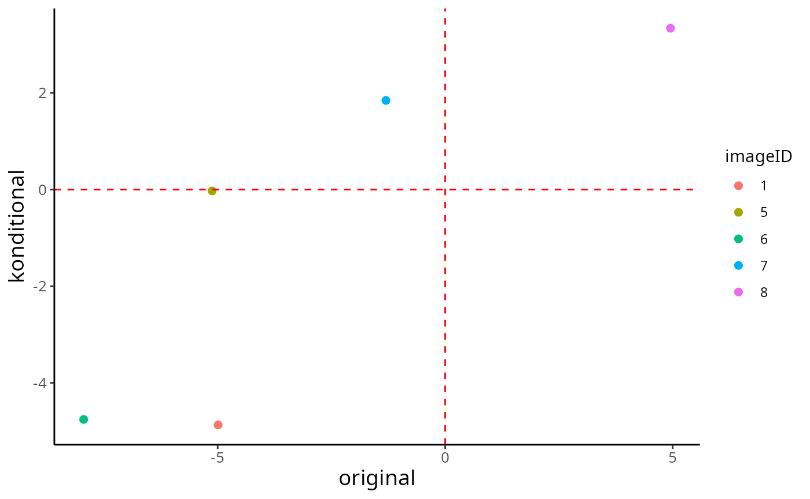
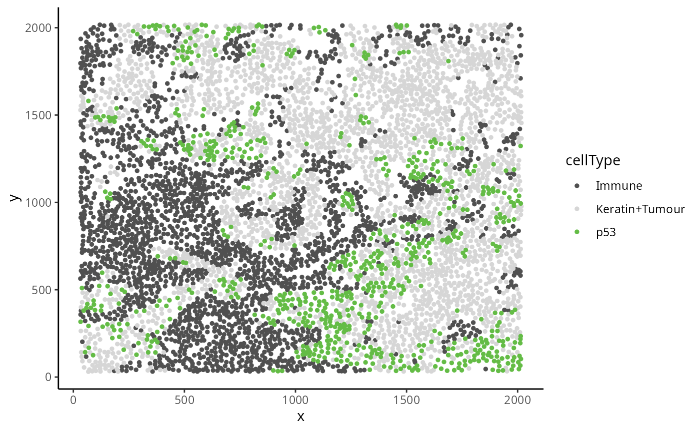
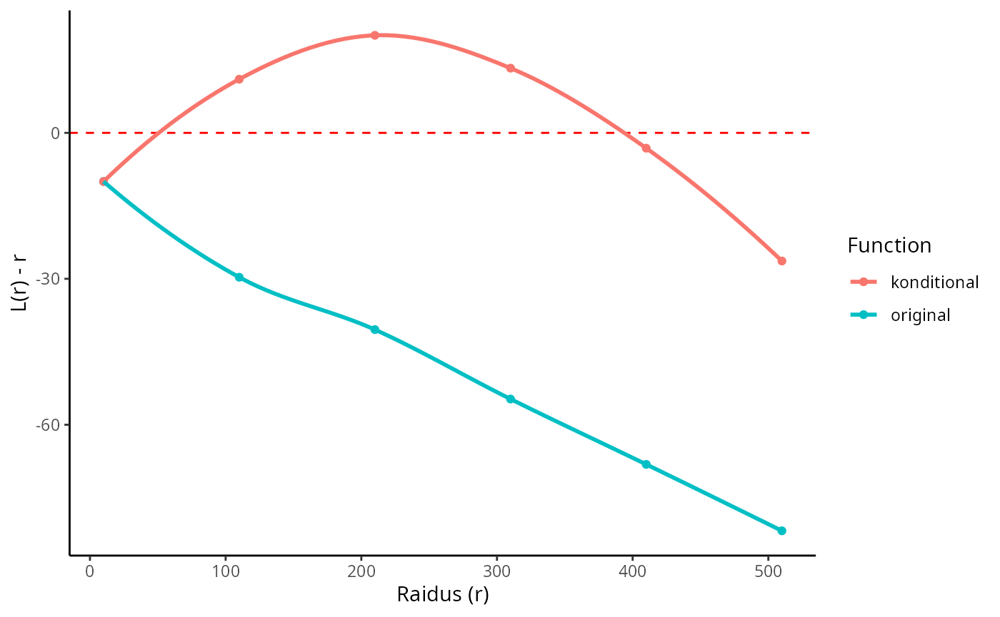

Statial
Farhan Ameen
School of Mathematics and Statistics, University of Sydney, AustraliaSourish Iyengar
School of Mathematics and Statistics, University of Sydney, AustraliaEllis Patrick
Westmead Institute for Medical Research, University of Sydney, AustraliaSchool of Mathematics and Statistics, University of Sydney, Australia9 November 2022
Statial.Rmd
# Loading required packages
library(Statial)
library(tidyverse)
library(SingleCellExperiment)
theme_set(theme_classic())Installation
# Install the package from Bioconductor
if (!requireNamespace("BiocManager", quietly = TRUE)) {
install.packages("BiocManager")
}
BiocManager::install("Statial")Overview
There are over 37 trillion cells in the human body, each taking up
different forms and functions. The behaviour of these cells can be
described by canonical characteristics, but their functions can also
dynamically change based on their environmental context, leading to
cells with diverse states. Understanding changes in cell state and the
interplay between cells is key to understanding their mechanisms of
action and how they contribute to human disease. Statial is
a suite of functions for identifying changes in cell state. This guide
will provide a step-by-step overview of some key functions within
Statial.
Evaluating cell localisation
Konditional is a method to evaluate the localisation
relationship between two cell types in an image.
Konditional builds on the L-function by contextualising the
relationship between two cell types in reference to the typical spatial
behaviour of a \(3^{rd}\) cell
type/population. By taking this approach, Konditional is
invariant to changes in the window of the image as well as tissue
structures which may be present.
The definitions of cell types and cell states are somewhat ambiguous,
cell types imply well defined groups of cells that serve different roles
from one another, on the other hand cell states imply that cells are a
dynamic entity which cannot be discretised, and thus exist in a
continuum. For the purposes of using Konditional we treat
cell states as identified clusters of cells, where larger clusters
represent a “parent” cell population, and finer sub-clusters
representing a “child” cell population. For example a CD4 T cell may be
considered a child to a larger parent population of Immune cells.
Konditional thus aims to see how a child population of
cells deviate from the spatial behaviour of their parent population, and
how that influences the localisation between the child cell state and
another cell state.
Loading example data
In the following we will analyse cutaneous squamous cell carcinoma
data from the head and neck region (Ferguson et al. 2022). These images
are stored in a SingleCellExperiment object. The first step
in analysing these images is to organise all the cells present into cell
state populations or clusters, e.g. all the different B cell types are
put in a vector called bcells.
# Load head and neck data
data("headSCE")
# Examine all cell types in image
unique(headSCE$cellType)
#> [1] EC1 SC7 MC3 Undefined BC3 SC1 SC2
#> [8] EP SC4 BC2 TC_CD4 SC5 EC2 BC1
#> [15] SC3 MC2 GC SC6 MC1 TC_CD8
#> 20 Levels: BC1 BC2 BC3 EC1 EC2 EP GC MC1 MC2 MC3 SC1 SC2 SC3 SC4 SC5 ... Undefined
# Set up cell populations
tumour <- c("SC1", "SC2", "SC3", "SC4", "SC5", "SC6", "SC7")
bcells <- c("BC1", "BC2", "BC3")
tcells <- c("TC_CD4", "TC_CD8")
myeloid <- c("MC1", "MC2", "MC3")
endothelial <- c("EC1", "EC2")
epithelial <- c("EP")
tissue <- c(endothelial, epithelial)
immune <- c(bcells, tcells, myeloid, "GC") # GC = granulocytes
all <- c(tumour, tissue, immune, "Undefined")Konditional
Konditional accepts a SingleCellExperiment
object, or a single image, or list of images from a
SingleCellExperiment object, this gets passed into the
cells argument. The two cell types which will be evaluated
are specified in the to and from arguments. A
parent population must also be specified in the parent
argument, note the parent cell population must include the
to cell type. The argument r will specify the
radius which the cell relationship will be evaluated on.
Konditional supports parallel processing, the number of
cores can be specified using the cores argument.
Konditional can take a single value or multiple values for
each argument and will test all combinations of the arguments
specified.
Here we test the relationship between CD4 T cells
(TC_CD4) and one type of Tumour cell (SC1)
with all immune cells being our parent population. The output is a data
frame with the original L-function values and
konditional values as well as the values for the arguments
specified. Where a negative original or
konditional value represents dispersion between
TC_CD4 and SC1 and a positive value indicates
localisation.
CD4_Konditional <- Konditional(
cells = headSCE,
r = 50,
from = "TC_CD4",
to = "SC1",
parent = immune,
cores = 1
)
head(CD4_Konditional)
#> imageID test original konditional r weightQuantile inhom edge
#> 1 1 TC_CD4__SC1 -4.990157 -4.87036888 50 0.8 TRUE FALSE
#> 2 5 TC_CD4__SC1 -5.122654 -0.02746783 50 0.8 TRUE FALSE
#> 3 6 TC_CD4__SC1 -7.945885 -4.75753347 50 0.8 TRUE FALSE
#> 4 7 TC_CD4__SC1 -1.301764 1.84603274 50 0.8 TRUE FALSE
#> 5 8 TC_CD4__SC1 4.951783 3.33973263 50 0.8 TRUE FALSE
#> includeZeroCells window window.length
#> 1 TRUE convex NA
#> 2 TRUE convex NA
#> 3 TRUE convex NA
#> 4 TRUE convex NA
#> 5 TRUE convex NAThe original and konditional values can be
compared in a scatter plot to identify relationships which have been
identified differently between the functions. The dashed red line
represents the expected pattern of the data, i.e. where there exists no
relationship between the two cell types. The top left quadrant therefore
represents values where Konditional has identified
localisation between CD4 and SC1 and the
original L-function has identified dispersion, the opposite is true for
the bottom right quadrant.
ggplot(CD4_Konditional, aes(x = original, y = konditional, col = imageID)) +
geom_point(size = 2) +
geom_hline(yintercept = 0, col = "red", linetype = "dashed") +
geom_vline(xintercept = 0, col = "red", linetype = "dashed") +
theme(
axis.title.x = element_text(size = 14),
axis.text.x = element_text(size = 10),
axis.text.y = element_text(size = 10),
axis.title.y = element_text(size = 14)
)
Alternatively all pairwise cell relationships and their corresponding
parent in the dataset can be tested. A data frame with all pairwise
combinations can be creating using the parentCombinations
function. This function takes in a vector of all the cells, as well as
all the parent vectors set up earlier. As shown below the output is a
data frame specifying the to, from, and
parent arguments for Konditional.
# Get all relationships between cell types and their parents
parentDf <- parentCombinations(
all = all,
tumour,
bcells,
tcells,
myeloid,
endothelial,
epithelial,
tissue,
immune
)
head(parentDf)
#> from to parent parent_name
#> 1 BC1 SC1 BC1, BC2.... bcells
#> 2 BC1 SC2 BC1, BC2.... bcells
#> 3 BC1 SC3 BC1, BC2.... bcells
#> 4 BC1 SC4 BC1, BC2.... bcells
#> 5 BC1 SC5 BC1, BC2.... bcells
#> 6 BC1 SC6 BC1, BC2.... bcellsRather than specifying to, from, and
parent in Konditional, the output from
parentCombinations can be inputed into
Konditional using the parentDf argument. Here
we will test the first 20 pairwise cell relationships in
parentCombinations on the first image of the dataset.
# Selecting Image 1 as an example
image_1 <- headSCE |>
colData() |>
data.frame() |>
filter(imageID == "1")
image1_Konditional <- Konditional(
cells = image_1,
parentDf = parentDf[1:20, ],
r = 50,
cores = 1
)
head(image1_Konditional)
#> imageID test original konditional r weightQuantile inhom edge
#> 1 1 BC1__SC1__bcells 0.5812206 4.630450 50 0.8 TRUE FALSE
#> 2 1 BC1__SC2__bcells -7.1248136 -8.571246 50 0.8 TRUE FALSE
#> 3 1 BC1__SC3__bcells -9.0872476 -10.469486 50 0.8 TRUE FALSE
#> 4 1 BC1__SC4__bcells 1.3391851 -1.813705 50 0.8 TRUE FALSE
#> 5 1 BC1__SC5__bcells 6.9660272 5.263392 50 0.8 TRUE FALSE
#> 6 1 BC1__SC6__bcells -8.5564596 -4.657076 50 0.8 TRUE FALSE
#> includeZeroCells window window.length
#> 1 TRUE convex NA
#> 2 TRUE convex NA
#> 3 TRUE convex NA
#> 4 TRUE convex NA
#> 5 TRUE convex NA
#> 6 TRUE convex NA#RsCurve
Here we examine an image were the relationship between 2 cell types
depends on a parent cell population. This is a breast cancer image
obtained from Keren et al, 2018 from patient 6. In the image below we
can see that p53 and Immune are dispersed.
However when the behaviour of p53 is placed in the context
of the spatial behaviour of its parent population
Keratin+Tumour, p53 and Immune
now appear localised.
data("kerenImage")
kerenImage |>
filter(cellType %in% c("Keratin+Tumour", "Immune", "p53")) |>
arrange(cellType) |>
ggplot(aes(x = x, y = y, color = cellType)) +
geom_point(size = 1) +
scale_colour_manual(values = c("#505050", "#D6D6D6", "#64BC46"))
The rsCurve function plots the L-function value and
Konditional values over a range of radii. If the points lie above the
red line (expected pattern) then localisation is indicated for that
radius, if the points lie below the red line then dispersion is
indicated. As seen in the following plot Konditional is able to
correctly identify localisation between p53 and
Immune in the example image for a certain range of radii.
When the radius gets too large the overall relationship between
p53 and Immune looks dispersed. The original
L-function is not able to identify localisation at any value of
radii.
rsDf <- rsCurve(
cells = kerenImage,
from = "p53",
to = "Immune",
parent = c("p53", "Keratin+Tumour"),
rs = seq(10, 510, 100),
cores = 1
)
ggplotRs(rsDf)
References
Ferguson, A. L., Sharman, A. R., Allen, R. O., Ye, T., Lee, J. H., Low, T.-H. H., Ch’ng, S., Palme, C. E., Ashford, B., Ranson, M., Clark, J. R., Patrick, E., Gupta, R., & Palendira, U. (2022). High-Dimensional and Spatial Analysis Reveals Immune Landscape–Dependent Progression in Cutaneous Squamous Cell Carcinoma. Clinical Cancer Research, OF1-OF12. (DOI)
Keren, L., Bosse, M., Marquez, D., Angoshtari, R., Jain, S., Varma, S., Yang, S. R., Kurian, A., Van Valen, D., West, R., Bendall, S. C., & Angelo, M. (2018). A Structured Tumor-Immune Microenvironment in Triple Negative Breast Cancer Revealed by Multiplexed Ion Beam Imaging. Cell, 174(6), 1373-1387.e1319. (DOI)
sessionInfo
sessionInfo()
#> R version 4.2.2 (2022-10-31)
#> Platform: x86_64-pc-linux-gnu (64-bit)
#> Running under: EndeavourOS
#>
#> Matrix products: default
#> BLAS: /usr/lib/libblas.so.3.10.1
#> LAPACK: /usr/lib/liblapack.so.3.10.1
#>
#> locale:
#> [1] LC_CTYPE=en_AU.UTF-8 LC_NUMERIC=C
#> [3] LC_TIME=en_AU.UTF-8 LC_COLLATE=en_AU.UTF-8
#> [5] LC_MONETARY=en_AU.UTF-8 LC_MESSAGES=en_AU.UTF-8
#> [7] LC_PAPER=en_AU.UTF-8 LC_NAME=C
#> [9] LC_ADDRESS=C LC_TELEPHONE=C
#> [11] LC_MEASUREMENT=en_AU.UTF-8 LC_IDENTIFICATION=C
#>
#> attached base packages:
#> [1] stats4 stats graphics grDevices utils datasets methods
#> [8] base
#>
#> other attached packages:
#> [1] SingleCellExperiment_1.20.0 SummarizedExperiment_1.28.0
#> [3] Biobase_2.58.0 GenomicRanges_1.50.1
#> [5] GenomeInfoDb_1.34.2 IRanges_2.32.0
#> [7] S4Vectors_0.36.0 BiocGenerics_0.44.0
#> [9] MatrixGenerics_1.10.0 matrixStats_0.62.0
#> [11] forcats_0.5.2 stringr_1.4.1
#> [13] dplyr_1.0.10 purrr_0.3.5
#> [15] readr_2.1.3 tidyr_1.2.1
#> [17] tibble_3.1.8 ggplot2_3.4.0
#> [19] tidyverse_1.3.2 Statial_0.99.5
#> [21] BiocStyle_2.26.0
#>
#> loaded via a namespace (and not attached):
#> [1] googledrive_2.0.0 colorspace_2.0-3 deldir_1.0-6
#> [4] ellipsis_0.3.2 rprojroot_2.0.3 XVector_0.38.0
#> [7] fftwtools_0.9-11 fs_1.5.2 spatstat.data_3.0-0
#> [10] farver_2.1.1 fansi_1.0.3 lubridate_1.9.0
#> [13] xml2_1.3.3 codetools_0.2-18 splines_4.2.2
#> [16] cachem_1.0.6 knitr_1.40 polyclip_1.10-4
#> [19] jsonlite_1.8.3 broom_1.0.1 dbplyr_2.2.1
#> [22] spatstat.linnet_2.3-2 spatstat.sparse_3.0-0 BiocManager_1.30.19
#> [25] compiler_4.2.2 httr_1.4.4 backports_1.4.1
#> [28] assertthat_0.2.1 Matrix_1.5-1 fastmap_1.1.0
#> [31] gargle_1.2.1 cli_3.4.1 htmltools_0.5.3
#> [34] tools_4.2.2 gtable_0.3.1 glue_1.6.2
#> [37] GenomeInfoDbData_1.2.9 spatstat_2.3-4 cellranger_1.1.0
#> [40] jquerylib_0.1.4 pkgdown_2.0.6 vctrs_0.5.0
#> [43] nlme_3.1-160 spatstat.random_3.0-1 xfun_0.34
#> [46] rvest_1.0.3 timechange_0.1.1 lifecycle_1.0.3
#> [49] googlesheets4_1.0.1 goftest_1.2-3 zlibbioc_1.44.0
#> [52] scales_1.2.1 spatstat.core_2.4-4 ragg_1.2.4
#> [55] hms_1.1.2 spatstat.utils_3.0-1 parallel_4.2.2
#> [58] yaml_2.3.6 curl_4.3.3 memoise_2.0.1
#> [61] sass_0.4.2 rpart_4.1.19 stringi_1.7.8
#> [64] highr_0.9 desc_1.4.2 BiocParallel_1.32.1
#> [67] rlang_1.0.6 pkgconfig_2.0.3 systemfonts_1.0.4
#> [70] bitops_1.0-7 evaluate_0.18 lattice_0.20-45
#> [73] tensor_1.5 labeling_0.4.2 tidyselect_1.2.0
#> [76] magrittr_2.0.3 bookdown_0.29 R6_2.5.1
#> [79] generics_0.1.3 DelayedArray_0.24.0 DBI_1.1.3
#> [82] withr_2.5.0 pillar_1.8.1 haven_2.5.1
#> [85] mgcv_1.8-41 abind_1.4-5 RCurl_1.98-1.9
#> [88] crayon_1.5.2 modelr_0.1.9 utf8_1.2.2
#> [91] spatstat.geom_3.0-3 tzdb_0.3.0 rmarkdown_2.17
#> [94] grid_4.2.2 readxl_1.4.1 data.table_1.14.4
#> [97] reprex_2.0.2 digest_0.6.30 textshaping_0.3.6
#> [100] munsell_0.5.0 concaveman_1.1.0 bslib_0.4.1